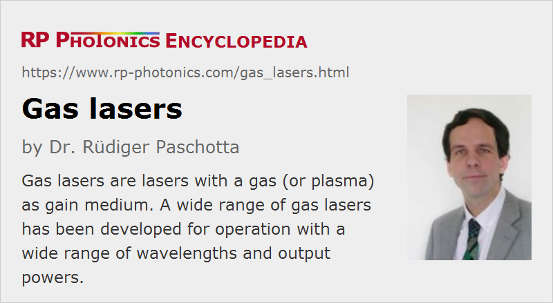

Gas Lasers
Definition: lasers with a gas (or plasma) as gain medium
More general terms: lasers
More specific terms: helium–neon lasers, helium–cadmium lasers, argon ion lasers, CO2 lasers, CO lasers, excimer lasers, nitrogen lasers, hydrogen lasers, metal vapor lasers
German: Gaslaser
How to cite the article; suggest additional literature
Author: Dr. Rüdiger Paschotta
A variety of lasers is based on gases as gain media. The laser-active entities are either single atoms or molecules, and are often used in a mixture with other substances having auxiliary functions. A population inversion as the prerequisite for gain via stimulated emission is in most cases achieved by pumping the gas with an electric discharge, but there are also gas lasers using a chemical reaction, optically pumped devices, and Raman lasers. During operation, the gas is often in the state of a plasma, containing a significant concentration of electrically charged particles.
Most gas lasers emit with a high beam quality, often close to diffraction-limited, since the gas introduces only weak optical distortions, despite considerable temperature gradients. Their operation usually requires a high-voltage supply, often with a high electrical power. Some high-power gas lasers use a system for quickly circulating the gas (forced convection, fast flow).
Types of Gas Lasers
There are very different kinds of gas lasers, operating in entirely different regimes concerning emission wavelength and output power:
- Helium–neon lasers (He–Ne lasers) often emit red light at 632.8 nm, but can also be made for other wavelengths such as 543.5 nm (green), 594.1 nm (yellow), 611.9 nm (orange), 3.39 μm, or 1.15 μm. Typical He–Ne lasers have a gas cell with a length of the order of 20 cm and generate a few milliwatts of output power in continuous-wave operation at 632.8 nm, using several watts of electrical power. Helium–neon lasers are often used for alignment and in interferometers, and compete with laser diodes, which are more compact and efficient. Some HeNe lasers serve in optical frequency standards.
- Argon ion lasers use a typically larger (e.g. 1 m long) water-cooled tube with an argon plasma, made with an electrical discharge with high current density in order to achieve a high degree of ionization. They can generate more than 20 W of output power in green light at 514.5 nm, and less at some other wavelengths such as 457.9, 488.0, or 351 nm. Their power efficiency is fairly low, so that tens of kilowatts of electrical power are required for multi-watt green output, and the cooling system has corresponding dimensions. There are smaller tubes for air-cooled argon lasers, requiring hundreds of watts for generating some tens of milliwatts. Argon ion lasers can be used e.g. for pumping titanium–sapphire lasers and dye lasers, and are rivaled by frequency-doubled diode-pumped solid-state lasers.
- Krypton ion lasers are similar to argon ion lasers and can emit high powers at 647.1 nm and some other wavelengths.
- Carbon dioxide lasers (CO2 lasers) use a gas mixture of CO2, helium (He), nitrogen (N2), and possibly some hydrogen (H2), water vapor, and/or xenon (Xe) for generating laser radiation mostly at 10.6 μm. They have wall-plug efficiencies above 10% and are suitable for output powers of multiple kilowatts with fairly high beam quality. They are widely used for material processing, e.g. cutting, welding and marking, but also in laser surgery. CO2 lasers are called molecular lasers because laser-active molecules are used.
- Carbon monoxide lasers (CO lasers) can have wall-plug efficiencies of the order of 40%, thus being substantially more power-efficient than CO2 lasers. They can emit on various lines between 4.8 μm and 8.3 μm and are mostly used as light sources for laser absorption spectroscopy. Following technological advances concerning the device lifetime, CO lasers emitting around 5.5 μm might also become interesting for laser material processing (e.g. cutting of glasses); in comparison with the widespread CO2 lasers, they offer better absorption in many materials and better focusing capabilities.
- Excimer lasers (rare gas halide lasers, exciplex lasers) are also pumped with an electrical discharge, but in that case the pumping energy is used to form unstable molecules which can emit photons when disassociating. Most excimer lasers are ultraviolet lasers and are operated with current pulses, leading to the emission of intense nanosecond pulses. They are used for various types of material processing, including pulsed laser deposition, laser marking, and the fabrication of fiber Bragg gratings. There are also medical applications e.g. in ophthalmology.
- Nitrogen lasers are another type of pulsed ultraviolet laser, based on pure nitrogen, a nitrogen–helium mixture, and sometimes even simply air (with lower performance). Emission typically occurs at 337.1 nm in the form of short pulses; a self-terminating laser transition is used. The high gain leads to relatively efficient superluminescent emission even without a laser resonator. Nitrogen lasers are relatively easy to build and operate, and have been made by many hobbyists without refined laboratory equipment.
- Hydrogen lasers can be used to access even shorter wavelengths around 160 nm, 123 nm or 116 nm.
- Various metal vapor lasers use a metal vapor, excited and heated by an electric discharge.
Copper vapor lasers are excited with intense current pulses and generate nanosecond pulses at 510.6 nm (green) or 578.2 nm (yellow). The average output power can exceed 100 W. Helium–cadmium lasers are more similar to helium–neon lasers, emitting continuously at 442 nm (blue) or 325 nm (ultraviolet), with optical powers of the order of 100 mW. The laser transition occurs in Cd+ ions, which become excited in collisions with excited helium atoms. - There are alkali vapor lasers, using e.g. a cesium or rubidium cell in an oven as the gain medium. Such lasers can be pumped with laser diodes. The power efficiency can be fairly high; note that the quantum defect can be small for a typical pumping scheme where one pumps from the ground state 6S1/2 to 6P3/2 and uses a transfer via a buffer gas (e.g. ethane) to the nearby 6P1/2 as the upper laser level. At the same time, the beam quality can be much higher than that of the pump source, so that such a laser acts as an efficient brightness converter. - Chemical lasers convert chemical energy of gases into laser light (typically in the mid- or near-infrared region) with powers up to the megawatt level. There are e.g. hydrogen-fluoride (HF) lasers, fueled with H2 and F2, which is converted to HF, and oxygen-iodine lasers (COIL). Chemical lasers are mainly studied for military purposes, e.g. as anti-missile weapons, to be operated even on board large airplanes. - Raman gas lasers are Raman lasers, based on optical amplification via stimulated Raman scattering rather than on stimulated emission of excited ions. They can e.g. use a hydrogen cell, and need to be optically pumped.
Gas lasers can also be grouped according to the nature of their laser-active species:
- Neutral atom gas lasers include helium–neon lasers and copper vapor lasers.
- Ion lasers use free ions; examples are helium–cadmium lasers, argon ion lasers and krypton lasers. Typically, ion lasers generate shorter wavelengths, but with moderate power efficiency.
- Molecular gas lasers use gas molecules. Examples are carbon dioxide and carbon monoxide lasers, nitrogen lasers, and excimer lasers.
Many gas lasers have self-terminating laser transitions, where the lower state has a long lifetime. Lasing stops once the lower-state population becomes too high. Examples for such gas lasers are nitrogen lasers and copper vapor lasers. Excimer lasers can also only be operated in pulsed mode, although for different reasons [3].
Application of Gas Lasers
A primary reason for using certain gas lasers instead of solid-state lasers is that they offer special wavelengths, which are otherwise difficult to obtain. Another interesting aspect is that relatively high optical powers can be obtained with gas lasers; compared to solid-state lasers, particularly diode-pumped ones, the price depends less strongly on the required output power level. A good example for both aspects is the carbon dioxide laser, which is quite a unique long-wavelength source with high output power. Similarly, excimer lasers provide high powers in the ultraviolet spectral region.
The helium–neon laser has been widely used for the generation of red laser light, but is now increasingly replaced by cheaper and more compact laser diodes. Similarly, argon ion lasers were often used for pumping titanium–sapphire lasers, but are now often replaced by frequency-doubled solid-state lasers.
Suppliers
The RP Photonics Buyer's Guide contains 42 suppliers for gas lasers. Among them:
Questions and Comments from Users
Here you can submit questions and comments. As far as they get accepted by the author, they will appear above this paragraph together with the author’s answer. The author will decide on acceptance based on certain criteria. Essentially, the issue must be of sufficiently broad interest.
Please do not enter personal data here; we would otherwise delete it soon. (See also our privacy declaration.) If you wish to receive personal feedback or consultancy from the author, please contact him e.g. via e-mail.
By submitting the information, you give your consent to the potential publication of your inputs on our website according to our rules. (If you later retract your consent, we will delete those inputs.) As your inputs are first reviewed by the author, they may be published with some delay.
Bibliography
| [1] | W. R. Bennett, Jr., A. Javan, and D. R. Herriott, “Gas optical maser”, U.S. Patent 3 149 290, 15 September 1964 |
| [2] | A. Javan, W. R. Bennett Jr., and D. R. Herriott, “Population inversion and continuous optical maser oscillation in a gas discharge containing a He–Ne mixture”, Phys. Rev. Lett. 6 (3), 106 (1961), doi:10.1103/PhysRevLett.6.106 |
| [3] | J. Coutts and C.E. Webb, “Stability of transverse self-sustained discharge-excited long-pulse XeCl lasers”, J. Appl. Phys. 59 (3), 704 (1986), doi:10.1063/1.336586 |
| [4] | W. R. Bennett, “Background of an inversion: the first gas laser”, J. Sel. Top. Quantum Electron. 6 (6), 869 (2000), doi:10.1109/2944.902136 |
| [5] | B. V. Zhdanov et al., “Rubidium vapor laser pumped by two laser diode arrays”, Opt. Lett. 33 (5), 414 (2008), doi:10.1364/OL.33.000414 |
| [6] | B. V. Zhdanov et al., “Multiple laser diode array pumped Cs laser with 48 W output power”, Electron. Lett. 44 (9), 582 (2008), doi:10.1049/el:20080728 |
| [7] | O. Svelto, Principles of Lasers, Plenum Press, New York (1998) |
See also: lasers, gas discharge lamps, molecular lasers, helium–neon lasers, excimer lasers, red lasers, green lasers, Raman lasers, high-power lasers
and other articles in the category lasers
|  |
If you like this page, please share the link with your friends and colleagues, e.g. via social media:
These sharing buttons are implemented in a privacy-friendly way!